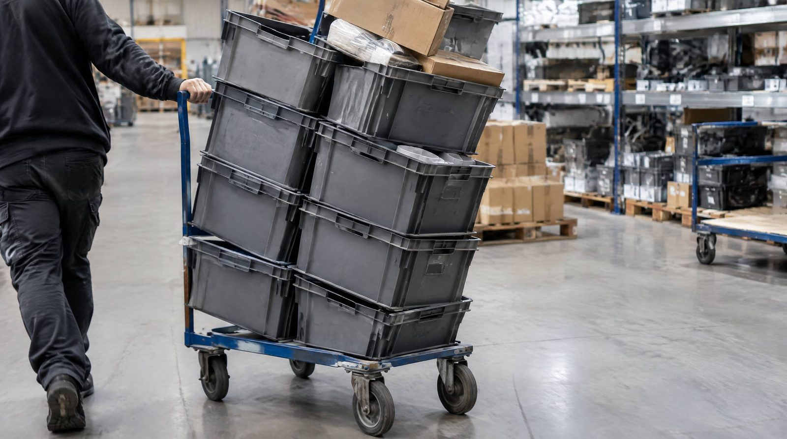

Batch picking er en af de mest effektive plukmetoder. Indtil du presser den for hårdt.
Ved 20+ ordrer per batch begynder fejlraten at stige. Ved 30 ordrer er den fordoblet. Det opdager de fleste først når Black Friday rammer. 6× volumen. Batches på 25-30 ordrer for at følge med. Fejlrate går fra 1,2% til 4,8% på 3 dage. 23 fejlordrer første dag. 47 kundehenvendelser. 10.350 kr. tabt.
Hvad er batch picking?
Batch picking betyder, at én plukker samler varer til flere ordrer på én gang i stedet for at gå én tur per ordre. I stedet for 20 ture til hylden for 20 separate ordrer plukkes de i én tur med en vognkasse opdelt i rum, én per ordre.
Optimal batch-størrelse er typisk 8 til 16 ordrer per tur, fordi det er hvad der kan være på en plukkevogn og stadig holdes logisk adskilt. Under 8 ordrer udnytter du ikke ruten nok. Over 16 ordrer begynder sortering og fejlrisiko at stige.
👉 Skalerer din webshop? Se hvordan SmartPack understøtter vækst
Hvornår holder det op med at virke?
Batch picking bryder ned, når:
- Batchen er for stor: Over 16-20 ordrer øger sorteringstid og fejlrate markant
- Ordrekompleksiteten er høj: Mange ordrelinjer per ordre gør det svært at holde styr på, hvad der tilhører hvad
- Lagerlokationerne er kaotiske: Uden optimeret plukrute ender du med at krydse dit eget spor
- Sorteringen foregår manuelt: Uden scanning eller pick-to-light er fejlraten på store batches 3-5%
- Volumenpres fra peak season: Under Black Friday med 6× normal kapacitet er batch picking med store batches fejlmagnet
Hvorfor det er vigtigt, i kroner
Den direkte omkostning per fejl er ca. 350 kr. Dertil de genkøb der udebliver.
Scenarie A: Optimal batch (8-16 ordrer, fejlrate 0,8%)
- 125.000 × 0,8% = 1.000 fejl/år × 450 kr. = 450.000 kr./år
Scenarie B: For store batches (20-30 ordrer, fejlrate 2,4%)
- 125.000 × 2,4% = 3.000 fejl/år × 450 kr. = 1.350.000 kr./år
Difference: 900.000 kr./år
Det opdager de fleste for sent
Scenarie 1: Black Friday-krakket
Du går fra 80 ordrer/dag til 480. Batch-størrelsen sættes til 25-30 ordrer for at følge med. Resultat: Fejlraten går fra 1,2% til 4,8% på 3 dage. 23 ordrer sendes forkert første dag. Kundeservice får 47 henvendelser. Cost: 23 × 450 kr. = 10.350 kr. på én dag.
Scenarie 2: Den erfarne plukker siger op
Din bedste medarbejder kunne håndtere batches på 18-20 ordrer uden fejl. Hun siger op. Afløseren kan max 12 ordrer. Du opdager at hele systemet var bygget på én persons hukommelse, ikke på proces.
Scenarie 3: Sortimentet vokser stille
For 6 måneder siden var batch picking perfekt. I dag har I 340% flere SKUer. Plukkerne krydser deres egne spor 4-5 gange per batch. Plukketiden er steget 38%, men I målte det ikke.
Typiske fejl
- For store batches, at sætte batch-størrelse til 30+ fordi det sparer ture ignorerer, at sorteringstiden og fejlraten æder gevinsten op. Hver ordre over 16 i en batch øger fejlrisikoen med 0,3 procentpoint.
- Batching uden geografisk logik, WMS skal batche ordrer med geografisk overlap, ellers går du samme rute 3 gange.
- Manuel sortering uden scanning, fejlrate uden scanning: 3,2%. Med scanning: 0,6%.
Sådan gør du det rigtigt
- Hold batches på 8-16 ordrer, dette er det dokumenterede optimum. Afveg ikke uden specifik grund og datamåling.
- Kræv WMS-genererede batches, lad ikke plukkere selv vælge, hvad de batcher. Algoritmen gør det bedre.
- Mål fejlrate per batchstørrelse, du kan finde dit specifikke optimum ved at spore fejlrate på batches af 5, 10, 15, 20 ordrer over 30 dage.
SmartPacks understøttelse
SmartPacks batch-algoritme genererer automatisk optimale batches baseret på geografisk lokationsoverlap og ordrekompleksitet. Systemet respekterer 8-16 ordrers-grænsen og skalerer batch-størrelse dynamisk baseret på volumen. Under peak season kan du manuelt justere batch-parametre eller lade systemet skalere automatisk. Scanning validerer hvert pluk og tildeler varen til korrekt ordre i realtid.
- Skagen Clothing: 200 ordrer pakket i timen
- MuraMura: 11.113 pakker på én kampagnedag